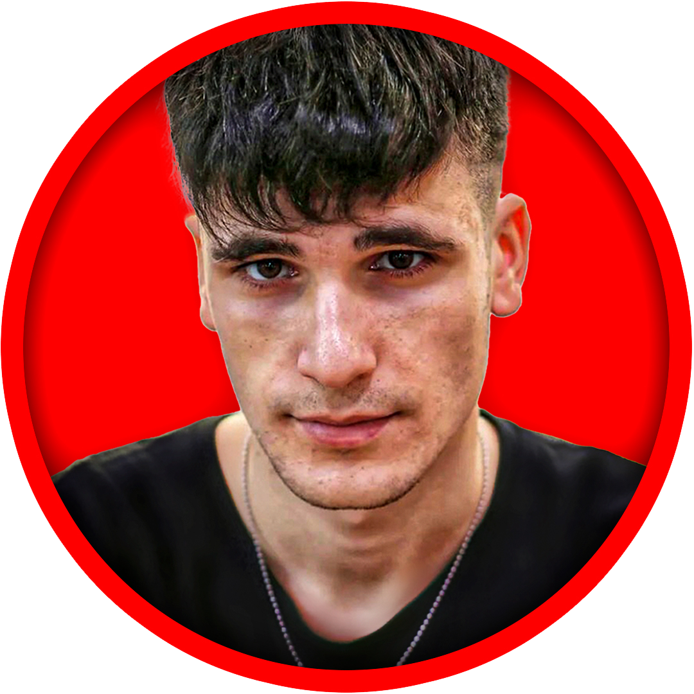

Experiencia con Guillem Ojeda (+12M seguidores)Construye un sistema UGC que atraiga marcas de calidad y rompe tu límite de facturación.
Olvídate de mandar mensajes a ciegas y de quemarte creando contenido sin rumbo. Diseñamos tu web de alta conversión, optimizamos tu producción en una sola sesión y te damos la estrategia exacta para cerrar marcas que pagan lo que vales. Tanto si empiezas de cero como si buscas escalar.
Escríbeme por WhatsAppPrimera conversación por WhatsApp, sin compromiso. Te digo con sinceridad si encajas.
El problema no es tu talento. Es tu sistema.
Si nunca has hecho UGC
No sabes qué enseñar, cómo presentarte ni a quién escribir. Sin portfolio, las marcas no tienen por qué arriesgarse contigo.
Si ya haces UGC
Dependes de que una marca te escriba, grabas cada pieza por separado, tu portfolio es un Drive o un enlace en la bio y negocias sin autoridad.
En ambos casos pasa lo mismo: las marcas deciden en segundos. Si tu presencia no genera confianza al instante, pierdes el trabajo antes de enseñar tu vídeo.
Lo que te doy y no vas a encontrar junto en otro sitio
La mayoría de agencias te venden humo o gestión genérica. Los diseñadores te hacen una web bonita pero vacía. Yo combino estrategia, contenido y tecnología.
Lo que hacen otros
- ✕ Plantillas web genéricas sin foco en conversión.
- ✕ Creación de contenido aislada (pieza a pieza y sin sistema).
- ✕ Cero acompañamiento técnico ni visión de negocio.
- ✕ Te dicen que esperes o pagues anuncios en frío.
- ✕ Equipos que rotan sin experiencia real en audiencias.
El Sistema Conmigo
- ✓ Web CRO: Diseñada para que la marca confíe y te escriba.
- ✓ Sala de creación: Graba 15 a 35 piezas en una sola sesión.
- ✓ Edición profesional a cargo: Me encargo personalmente de pulir cada vídeo.
- ✓ Prospección activa: Análisis en vídeo personalizados a marcas.
- ✓ Mentor directo: Experiencia validada con creadores top.
Qué incluye
Portfolio web de alta conversión
Una página tuya, rápida, con tu nicho, tus piezas y un solo camino claro: que la marca te contacte. Sin fricción, sin menús que distraigan.
Sala de creación: un día, semanas de contenido
Convertimos tu estrategia en 15 a 35 reels que grabas en una sola sesión. Dejas de empezar de cero cada día.
Guiones, ganchos y edición profesional
Me encargo personalmente de la dirección de los ganchos, el ritmo y la edición completa de tus vídeos para asegurar que transmitan máxima calidad y retención.
Prospección quirúrgica
En vez de mensajes masivos, analizamos la web o el funnel de una marca concreta y le mandamos un vídeo con mejoras reales. Llegas aportando valor desde el primer contacto.
Así trabajamos
- DiagnósticoVemos dónde estás: sin experiencia o con ella, tu nicho y qué marcas encajan.
- Posicionamiento y portfolioDefinimos qué te hace elegible y montamos tu web con la conversión como único objetivo.
- Sesión de grabación y ediciónGrabas en volumen y me encargo de la postproducción profesional de cada pieza.
- Salida a marcasProspección con análisis en vídeo y Build in Public para construir autoridad sin ads.
Elige tu pack
Dos caminos, según el punto en el que estés. Si dudas cuál es el tuyo, te lo digo yo por WhatsApp.
Pack Arranque
Para quien nunca ha hecho UGC y necesita una base sólida para presentarse a marcas.
- Diagnóstico y posicionamiento de tu nicho
- Portfolio web de alta conversión
- Guiones y ganchos optimizados
- Edición profesional de tus primeras piezas
Pack Escala
Para quien ya hace UGC y quiere producir más rápido y conseguir marcas de forma activa.
- Todo lo del Pack Arranque incluido
- Sala de creación: 15 a 35 piezas por sesión
- Edición y postproducción experta incluida
- Prospección quirúrgica con análisis en vídeo
- Estrategia y acompañamiento continuo
Prueba real: El caso AcroGravity
Un proyecto de acrobacias y clases en Peñíscola. Con una landing optimizada y estrategia orgánica, el interés se convirtió en alumnos recurrentes desde el primer mes, sin invertir un solo euro en anuncios.
Es exactamente el mismo enfoque y nivel de conversión que aplico para posicionar tu marca personal.
BlueGravity
Testimonio sobre el sistema y resultados obtenidos
Marc
Experiencia con la metodología y el impacto en conversión
Preguntas frecuentes
¿Qué es exactamente el UGC y a quién va dirigido?
UGC (User Generated Content) son vídeos comerciales o de recomendación creados por personas reales para marcas. Este sistema está enfocado a creadoras que quieren monetizar su talento colaborando profesionalmente con marcas, en lugar de depender de likes o redes sociales saturadas.
¿Y si no tengo ni idea de grabar ni editar?
No te preocupes. Yo te marco la estrategia exacta, los guiones y los ganchos. Tú solo pones el talento frente a cámara y yo me encargo personalmente de toda la edición profesional. Con el tiempo, te enseñaré el método para que lo hagas tú misma si quieres ahorrar costes.
¿Esto es una agencia tradicional o un curso?
Ninguna de las dos cosas. Es un acompañamiento directo y personalizado de la mano de un creador con experiencia trabajando con canales top de más de 12M de seguidores. Montamos tu infraestructura real (web + contenido + prospección) para que cierres marcas.
¿Cuánto cuesta y cómo funciona?
Trabajamos mediante packs a medida (Arranque o Escala) según tu punto de partida. Escríbeme por WhatsApp sin compromiso, estudiamos tu caso y te doy una propuesta clara y sin sorpresas.
¿Tengo que invertir en publicidad o anuncios?
Absolutamente no. Todo el sistema se basa en autoridad orgánica, estrategias de conversión web y prospección directa a marcas, invirtiendo 0€ en pauta publicitaria.
¿Quién está detrás de esto?
No te vende teoría una agencia anónima. Te acompaña alguien que vive de crear contenido y construir tecnología al más alto nivel.

Sergio
Creador con 545K seguidores propios construidos de forma orgánica y más de 8 años de experiencia en desarrollo web, optimización CRO y automatizaciones.
Experiencia con Guillem Ojeda
He trabajado para el creador e influencer Guillem Ojeda, sumando más de 12 millones de seguidores en redes sociales y aportando visión de élite en la creación de contenido.
Tu próxima marca no va a buscarte si no tienes un sitio donde mirar
Cuéntame en qué punto estás. Te respondo personalmente y te digo si podemos trabajar juntos.
Escríbeme por WhatsApp y empezamosPlazas limitadas para poder dedicarte atención real.